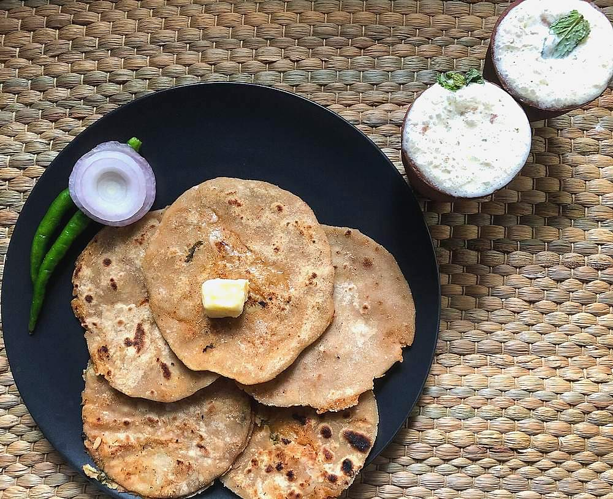

Contains: milk, gluten
Ingredients
Quantities for 4.
- 2.5 cups (300g), wholewheat flour Atta
- about 1 cup, lukewarm Water
- 500g, boiled, peeled and cooled completely Potato
- 1 small, very finely chopped Onionoptional in many householdsoptional
- 2, minced Green Chilli
- 1 inch, grated Ginger
- 3 tbsp, chopped Coriander Leaves
- 1 tsp Amchur
- 1 tsp, dry-roasted and crushed Cumin Seeds
- 3/4 tsp Chilli Powder
- 1/2 tsp Garam Masala
- 1/2 tsp Ajwainoptional
- 6 tbsp, for the dough and the tawa Ghee
- to serve Butteroptional
- to taste Salt
Cookware
tawa, stovetop
Checked against the ingredient list for ten allergens: milk, egg, fish, crustaceans, tree nuts, peanuts, sesame, mustard, soy and gluten. Brands vary, so read the label on anything new to you.
Before you start
- Boil the potatoes the night before, or at least cool them completely. Warm potato releases steam inside the paratha and tears it open.
- Knead the dough and rest it 30 minutes under a damp cloth. Rested dough stretches around the filling instead of splitting.
- Mash the potato dry with a fork or ricer. Never use a blender, which turns it to glue.
Method
- Mix the atta with 1/2 tsp salt and 1 tbsp ghee, then add the water gradually and knead 8 minutes to a soft, smooth dough.It should be softer than you think. Barely holding its shape. Stiff dough makes hard parathas.
- Cover with a damp cloth and rest 30 minutes.
- Mash the cold potatoes and mix in the onion, green chilli, ginger, coriander, amchur, crushed cumin, chilli powder, garam masala, ajwain and 1 tsp salt.
- Taste the filling and correct the salt and sour. It should taste slightly over-seasoned on its own.
- Divide dough and filling into 8 each, and roll both into balls.
- Flatten a dough ball into a 4-inch disc, cup it in your palm, place a filling ball in the middle, and gather the edges over the top, pinching them shut.Pinch off and discard the little knot of excess dough at the top, or that spot stays raw.
- Press the sealed ball flat, dust with flour, and roll gently to a 7-inch disc, working from the centre outward and turning as you go.Even pressure. Lean on one spot and the filling bursts through.
- Lay it on a hot tawa and cook 60 seconds until the surface bubbles and the underside has pale spots.
- Flip, brush the cooked side with ghee, and cook 60 seconds.
- Flip once more, brush again, and press the edges down with a cloth until both sides are freckled deep brown, about 45 seconds.
- Stack in a covered dish and serve hot with butter, yogurt and pickle.
Storage
Best hot off the tawa. Keeps 1 day wrapped in foil in the fridge; reheat on a dry tawa 2 minutes a side. Uncooked stuffed parathas freeze 1 month between sheets of paper. Cook from frozen on low heat.
Nutrition Medium estimate
Medium protein: 11 g a serving, 8% of the calories
| Per serving254 g | Per 100 g | |
|---|---|---|
| Calories | 536 kcal | 212 kcal |
| Protein | 10.7 g | 4 g |
| Carbohydrate | 82.3 g | 32 g |
| of which sugars | 3.7 g | 1 g |
| Fibre | 13.7 g | 5 g |
| Fat | 21.2 g | 8 g |
| of which saturated | 12.3 g | 5 g |
| of which unsaturated | 7.7 g | 3 g |
Ingredients given to taste count as zero, so the real figures run a little higher. Nearest database match used for amchur, garam masala. Estimated from raw ingredients using USDA FoodData Central.
More like this: Vegetarian Indian recipes · Punjabi recipes
Times, yields, allergens and nutrition are guidance. Use your own judgement on doneness and on storing. More in About.